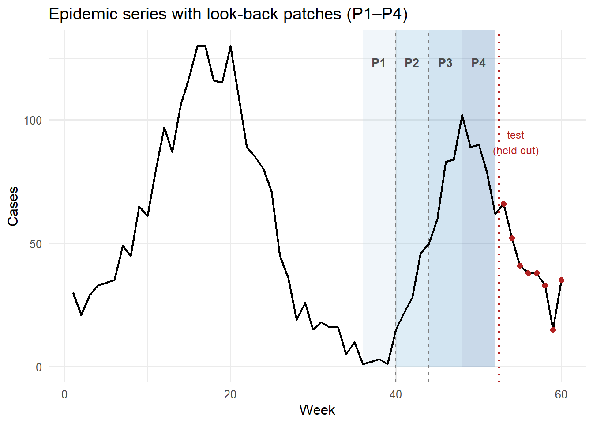

Transformer-Based LLM Architectures for Epidemic Time Series Forecasting
Language models tokenize text into words; time series transformers tokenize history into patches. Build a patch-attention forecaster in R that predicts four weeks of case counts from sixteen weeks of history.
machine learning
transformers
time series
forecasting
R
Author
Jong-Hoon Kim
Published
April 23, 2026
1 Why epidemic forecasting needs its own transformer
The previous post showed that attention is a learned weighted average over a context window. That is the mechanism inside every LLM — GPT, Claude, Gemini — and it also underlies the best time-series forecasting models.
But applying an LLM directly to epidemic incidence data hits three structural problems:
Continuous vs. discrete tokens. LLMs consume discrete tokens (integers drawn from a fixed vocabulary). Case counts are continuous — a naive tokenization loses numerical structure.
Expensive quadratic attention. A full weekly series from 2010 to today is roughly 750 time steps. Full self-attention is \(O(n^2)\) in sequence length, which becomes expensive as history grows.
Distribution shift between epidemic waves. Each wave has a different scale. A model trained on a wave peaking at 2,000 cases/week struggles with a wave peaking at 200. Raw values carry absolute scale information that hurts cross-wave generalization.
Three innovations, developed between 2021 and 2024, solve each problem:
Problem
Solution
Paper
Continuous inputs
Patch embedding: segment the series into fixed-length patches; each patch becomes one “token”
Together they define a blueprint — patch the input, normalize it, run a transformer encoder, project to the forecast horizon — that also underlies the zero-shot foundation models TimeGPT (3) and CHRONOS (4).
This post builds that blueprint from scratch in R, using only base R, ggplot2, and dplyr.
2 The three innovations in detail
2.1 Patching: turning a time series into tokens
In an LLM, the input sentence is split into word-pieces (tokens), and the transformer attends across them. Each token carries a semantically coherent unit of meaning.
For a time series, a single time step is the equivalent of a single character — too granular to carry meaning. A patch of \(M\) consecutive time steps is the equivalent of a word: it captures a local trend, a brief acceleration, or a short plateau.
Formally, given a look-back window of \(L\) time steps, we divide it into \(P = L / M\) non-overlapping patches. The transformer then attends across \(P\) patch tokens rather than \(L\) individual steps. Reducing the sequence from \(L\) to \(P = L/M\) cuts the quadratic attention cost by a factor of \(M^2\).
2.2 RevIN: instance normalization
RevIN (2) normalises each individual input window at inference time:
This makes the model scale-invariant: it sees unit-variance, zero-mean inputs regardless of whether the current wave is small or large, making weights learned on one wave transfer to another.
2.3 Multi-step direct forecasting
RNNs and ARIMA produce forecasts autoregressively — one step at a time, feeding each prediction back as input. Error accumulates. A transformer encoder maps the full context to all \(H\) future steps in one shot, producing a joint forecast that is both faster and more accurate at longer horizons (5).
L <-16# look-back window (weeks)P_len <-4# patch length (weeks per patch)P <- L / P_len # number of patches = 4H <-4# forecast horizon (weeks ahead)# RevIN: normalize one window, return normalized values + stats for denormrevin_norm <-function(x) { mu <-mean(x) sigma <-sd(x)list(x_norm = (x - mu) / (sigma +1e-8), mu = mu, sigma = sigma)}revin_denorm <-function(x_norm, mu, sigma) { x_norm * (sigma +1e-8) + mu}# Summarize each patch as its mean (the "embedding")make_patch_means <-function(x_norm, patch_len) { n_p <-length(x_norm) / patch_lenvapply(seq_len(n_p), function(i) { idx <- ((i -1) * patch_len +1):(i * patch_len)mean(x_norm[idx]) }, numeric(1))}
3.3 Building the training dataset
Each training sample is a (patches, targets) pair. The patches encode the normalized look-back window; the targets are the next \(H\) steps in the same normalized space.
n_samples <- n_train - L - H +1# = 33 training examplesX_patches <-matrix(NA_real_, n_samples, P)y_targets <-matrix(NA_real_, n_samples, H)norm_stats <-vector("list", n_samples) # store mu/sigma for each windowfor (i inseq_len(n_samples)) { window <- train_cases[i:(i + L -1)] rv <-revin_norm(window) norm_stats[[i]] <- rv X_patches[i, ] <-make_patch_means(rv$x_norm, P_len) future <- train_cases[(i + L):(i + L + H -1)] y_targets[i, ] <- (future - rv$mu) / (rv$sigma +1e-8)}cat("Training samples:", n_samples,"| Patches per sample:", P,"| Forecast steps:", H, "\n")
Training samples: 33 | Patches per sample: 4 | Forecast steps: 4
where \(\odot\) broadcasts the patch weights \(\mathbf{w}\) across all rows of \(\mathbf{X}\). The attention weights \(\mathbf{w}\) scale the importance of each patch globally; the projection \(\mathbf{W}\) maps the reweighted patches to each future horizon.
softmax <-function(alpha) { e <-exp(alpha -max(alpha)) e /sum(e)}# params layout: alpha[1:P], vec(W)[1:(P*H)], b[1:H]forward <-function(params, X) { alpha <- params[seq_len(P)] W <-matrix(params[(P +1):(P + P * H)], nrow = P, ncol = H) b <- params[(P + P * H +1):(P + P * H + H)] w <-softmax(alpha) Z <-sweep(X, 2, w, "*") # n × P Z %*% W +matrix(b, nrow(X), H, byrow =TRUE) # n × H}loss_fn <-function(params) { yhat <-forward(params, X_patches)mean((yhat - y_targets)^2)}
3.5 Training with gradient descent
num_grad <-function(f, x, eps =1e-5) {vapply(seq_along(x), function(j) { x1 <- x2 <- x x1[j] <- x1[j] + eps x2[j] <- x2[j] - eps (f(x1) -f(x2)) / (2* eps) }, numeric(1))}set.seed(7)n_params <- P + P * H + H # 4 + 16 + 4 = 24params <-c(rep(0, P), rnorm(P * H, 0, 0.1), rep(0, H))lr <-0.05n_iter <-2500loss_log <-numeric(n_iter)for (iter inseq_len(n_iter)) { g <-num_grad(loss_fn, params) params <- params - lr * g loss_log[iter] <-loss_fn(params)}w_learned <-softmax(params[seq_len(P)])cat("Final training loss (normalized MSE):", round(loss_fn(params), 4), "\n\n")
patch 1 (weeks 1–4 of look-back): 0.018
patch 2 (weeks 5–8 of look-back): 0.008
patch 3 (weeks 9–12 of look-back): 0.573
patch 4 (weeks 13–16 of look-back): 0.4
The attention weights reveal which temporal segment the model finds most predictive. In an epidemic context, the most recent patch (weeks 13–16 of the look-back window) should receive the highest weight because short-term autocorrelation in case counts is strong — similar to what the single-step attention model found in the previous post, but now measured at the coarser patch scale.
3.6 Patching the time series
library(ggplot2)library(dplyr)# Build patch boundary data for the look-back window used in the test forecastlb_start <- n_train - L +1# week 37lb_end <- n_train # week 52patch_df <-data.frame(xmin = lb_start + (seq_len(P) -1) * P_len -1,xmax = lb_start +seq_len(P) * P_len -1,patch =factor(seq_len(P)),alpha_fill =seq(0.10, 0.40, length.out = P))ts_df <-data.frame(week =seq_along(cases), cases = cases)ggplot() +geom_rect(data = patch_df,aes(xmin = xmin, xmax = xmax, ymin =0, ymax =Inf, fill = patch),alpha =0.22, show.legend =FALSE ) +geom_vline(xintercept = patch_df$xmin[-1],linetype ="dashed", colour ="grey50", linewidth =0.4 ) +geom_line(data = ts_df, aes(x = week, y = cases),colour ="black", linewidth =0.8) +geom_point(data = ts_df |> dplyr::filter(week > n_train),aes(x = week, y = cases),colour ="firebrick", size =2, shape =16) +scale_fill_manual(values =c("#bdd7e7", "#6baed6", "#3182bd", "#08519c")) +annotate("text", x = lb_start + (seq_len(P) -0.5) * P_len -1,y =max(cases) *0.95,label =paste0("P", seq_len(P)),colour ="grey30", size =3.5, fontface ="bold") +annotate("text", x = n_train +2.5, y =max(cases) *0.7,label ="test\n(held out)", colour ="firebrick", size =3.2) +geom_vline(xintercept = n_train +0.5,linetype ="dotted", colour ="firebrick", linewidth =0.8) +labs(x ="Week", y ="Cases",title ="Epidemic series with look-back patches (P1–P4)") +theme_minimal(base_size =12)

Figure 1: The 16-week look-back window (weeks 37–52, shaded) is divided into four patches of four weeks each. Each patch becomes one ‘token’ for the transformer encoder. The final patch (weeks 49–52, darkest shading) carries the most recent trend information and typically receives the highest attention weight.
3.7 Generating the 4-week forecast
# Input window: last L=16 weeks of training dataforecast_window <- train_cases[(n_train - L +1):n_train]rv_test <-revin_norm(forecast_window)X_test <-matrix(make_patch_means(rv_test$x_norm, P_len), nrow =1)# Forward pass → normalized predictions → denormalizepred_norm <-forward(params, X_test)pred_cases <-pmax(0, round(revin_denorm(pred_norm[1, ], rv_test$mu, rv_test$sigma)))# Naive baseline: repeat the last observed valuenaive_pred <-rep(train_cases[n_train], H)# Error on the first H test weeksobs_H <- test_cases[seq_len(H)]rmse_patch <-sqrt(mean((pred_cases - obs_H)^2))rmse_naive <-sqrt(mean((naive_pred - obs_H)^2))cat("4-week forecast (patch-attention):", pred_cases, "\n")
Figure 2: Four-week epidemic forecast. The patch-attention model (blue) captures the declining trend of the second wave by learning that the most recent patches — which show falling incidence — deserve higher attention weights. The naive forecast (orange dashed) anchors on the last observed value and misses the trend. Observed values beyond the training cutoff are shown in red.
4 From scratch to production: TimeGPT and CHRONOS
The patch-attention model above has 24 parameters and trains on a single epidemic time series. Production systems extend this blueprint in two directions.
Foundation models pre-train the same architecture on tens of millions of diverse time series — electricity demand, retail sales, financial returns, disease counts — then apply the learned weights to new series without any retraining (zero-shot inference).
TimeGPT(3) works via a REST API: send a historical series, get back a probabilistic forecast with confidence intervals. No GPU required on the client side.
CHRONOS(4), released by Amazon in 2024, converts time series values into discrete tokens (by quantizing the distribution of observed values), then trains a standard language model — T5 architecture — on token prediction. At inference time, it samples token sequences and maps them back to numeric forecasts. This is the closest to a literal “LLM for time series”: the same model class (transformer decoder) and the same training objective (next-token prediction) as GPT, applied to quantized time series data.
When the historical series for a given district is short (a new health department client with only six months of data), zero-shot models are especially valuable: they borrow statistical strength from the millions of other series in their training corpus.
5 Practical takeaway
The three-part blueprint — patch, normalize, attend — is the key mental model:
Component
Why it matters
What to use
Patching
Reduces sequence length; gives local context to each “token”
PatchTST (1), patch size 4–16 weeks for epidemic data
RevIN
Handles scale shift between epidemic waves without extra data
Built into PatchTST; apply manually when rolling your own
Multi-step direct output
No error accumulation; faster at long horizons
Output a \(H\)-vector in one forward pass
Zero-shot foundation model
No retraining needed for new districts
TimeGPT (API), CHRONOS (local)
For a digital twin platform, the practical decision tree is:
≥ 2 years of weekly data, district-specific: fine-tune a PatchTST-style model on that district’s history.
< 1 year of data, new client: use TimeGPT or CHRONOS zero-shot; supplement with the mechanistic SEIR prior.
Need interpretable weights per time period: use the Temporal Fusion Transformer (5), which outputs variable importance scores over patch positions.
The R implementation above is a minimal proof of concept with 24 parameters. The principle scales directly to the production architectures: more patches, higher-dimensional embeddings, multi-head attention, and pre-training on thousands of epidemic series.
6 References
1.
Nie Y, Nguyen NH, Sinthong P, Kalagnanam J. A time series is worth 64 words: Long-term forecasting with transformers. In: International conference on learning representations [Internet]. 2023. Available from: https://arxiv.org/abs/2211.14730
2.
Kim T, Kim J, Tae Y, Park C, Choi JH, Choo J. Reversible instance normalization for accurate time-series forecasting against distribution shift. In: International conference on learning representations [Internet]. 2022. Available from: https://arxiv.org/abs/2106.06633
Ansari AF, Stella L, Turkmen C, Zhang X, Mercado P, Shen H, et al. Chronos: Learning the language of time series. arXiv; 2024. doi:10.48550/arXiv.2403.07815
5.
Lim B, Arik SO, Loeff N, Pfister T. Temporal fusion transformers for interpretable multi-horizon time series forecasting. International Journal of Forecasting. 2021;37(4):1748–64. doi:10.1016/j.ijforecast.2021.03.012